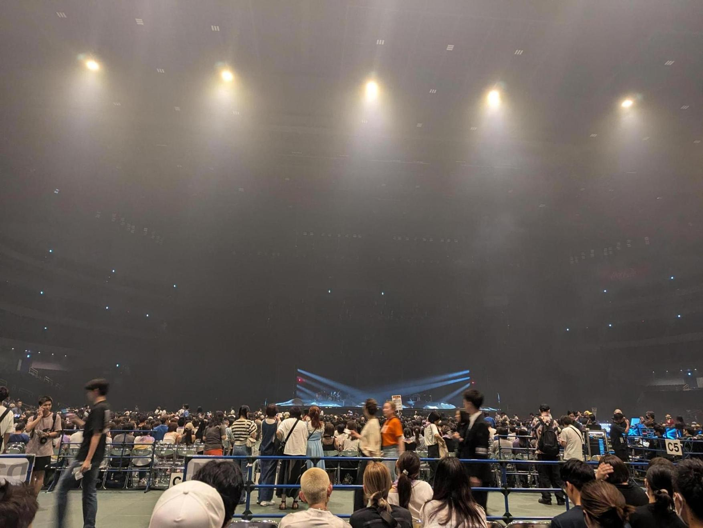

宇多田ヒカルのライブツアー「HIKARU UTADA SCIENCE FICTION TOUR 2024」に行った。さいたまスーパーアリーナ。

宇多田ヒカルって歌もいいんだけど、声と歌い方が個性的なんだなと思った。シャープな声質のイメージだったけど、もっと感情を乗せたような歌声に聞こえた。後、詳しくはないけど音作り的なところも凄さを感じた。
一方、コンサートという物自体はしんどいなと思った。立って聴くのも疲れるし、人が多すぎる。コンサート会場という超ハイコンテキストかつ周りに合わせなければいけない空間はきつい。